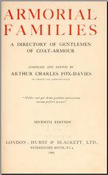
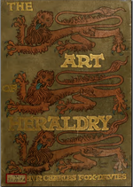
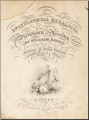
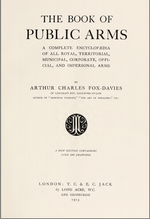
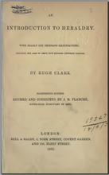
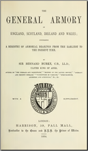
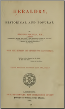
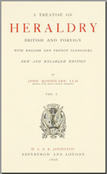
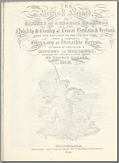

I needed some reference sources for my Heraldry of Lincoln Cathedral Project and found many heraldic works freely available on archive.org. Unfortunately there were very few reviews or guidance on which were most useful so I have provided some here! All views (and any mistakes) are my own.
To select the most useful I assessed them against the following criteria:
This then is the resulting list. The links in the middle column go directly to the appropriate page on archive.org, the link in the right hand column is to additional page on this site, which lists the contents, quality and other information about the work. I have also included these comments in a review of each book on the archive.org site, each review is titled "Bookshelf of British Heraldry" but I can't guarantee that they will stay near the top!
If you are trying to use these resources to identify some heraldry that you have found then I have put together some hints and tips for identification.
| Bookshelf of British Heraldry | Title | Review and Contents |
|---|---|---|
| Summary & Link | Rating | |
|  | Armorial Families, a Directory of Gentlemen of Coat Armour, 7th Ed. A.C. Fox-Davies Hurst & Blackett, London 1929 | More details... |
| These 2 volumes contain 2,200 searchable pages of fantastic detail and beautiful images of full achievements, with arms, mottoes and family details http://archive.org/details/armorialfamilies01foxd http://archive.org/details/armorialfamilies01foxd | Essential | |
|  | The Art of Heraldry - An Encyclopaedia of Armory A.C. FOX-DAVIES TC and EC Jack, London 1904 | More details... |
| This is a beautiful visual source book of Heraldic art, with more than 150 full page plates and 1200 other figures. http://archive.org/details/artofheraldryenc00foxd | Essential | |
|  | Encyclopaedia Heraldica, or Complete Dictionary of Heraldry William BERRY Sherwood Gilbert and Piper, 1828-40?? | More details... |
| A very comprehensive work, it can be hard to navigate but what you need to know is in here somewhere! http://archive.org/details/encyclopaediaher01berr http://archive.org/details/encyclopaediaher21berr http://archive.org/details/encyclopaediaher22berr http://archive.org/details/encyclopaediaher03berr http://archive.org/details/encyclopaediaher04berr | Essential | |
|  | The Book of Public Arms A.C. Fox Davies T.C. & E.C. Jack, 1915 | More details... |
| Well illustrated and comprehensive list of British corporate, municipal and other non-family arms. http://archive.org/details/bookofpublicarms00foxd | Essential | |
|  | An Introduction to Heraldry, 18th Ed. Hugh Clark, updated by J.R. Planche) Bell & Daldy, London(?) 1866 | More details... |
| Excellent general introduction and overview, colour reproduction stained but readable. http://archive.org/details/introductiontohe00claruoft | Recommended | |
|  | The General Armory of England, Scotland, Ireland and Wales, Comprising a Registry of Armorial Bearings from the Earliest to the Present Time Sir Bernard BURKE Harrison, London, 1884 | More details... |
| Good background information, very comprehensive list of family names (50,000+) and some interesting contemporary advertisements too! http://archive.org/details/generalarmoryofe00burk | Recommended | |
|  | Heraldry Historical and Popular, 3rd Edition Charles BOUTELL Richard Bentley, London 1864 | More details... |
| Huge amount of information on all aspects of heraldry, including 975 illustrations, many in colour. http://archive.org/details/heraldryhistoric01bout | Recommended | |
|  | A Treatise on Heraldry, British and Foreign John WOODWARD W &AK Johnson, London 1896 | More details... |
| Interesting and wide ranging work, illustrations mainly shields only. http://archive.org/details/treatiseonherald01wood http://archive.org/details/treatiseonherald02wood | Interesting | |
|  | The British Herald or Cabinet of Armorial Bearings of the Nobility and Gentry of Great Britain & Ireland from the Earliest to the Present Time... Thomas ROBSON Sunderland 1830 | More details... |
| This is a comprehensive work, but PDFs of volumes I and III are only available from Google Books and they are NOT text searchable. http://archive.org/details/britishheraldor04robsgoog http://archive.org/details/britishheraldor02robs http://archive.org/details/britishheraldor01robsgoog | Flawed |